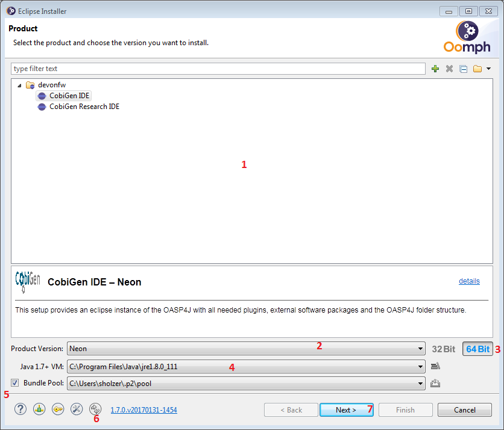
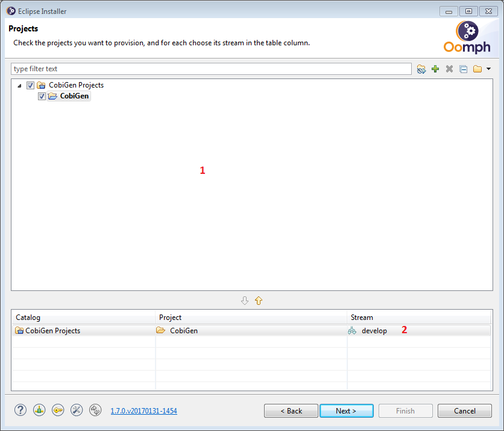
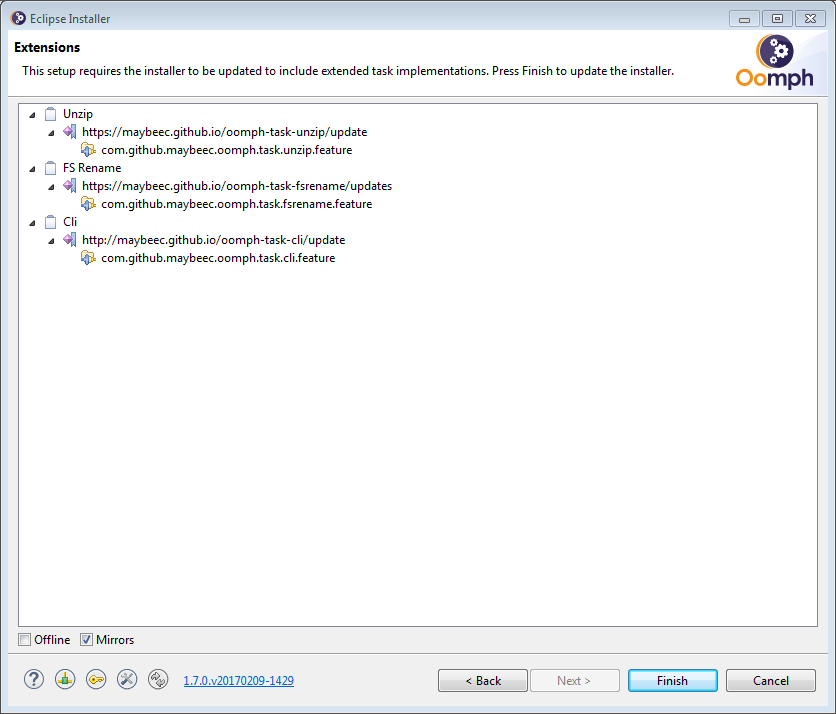
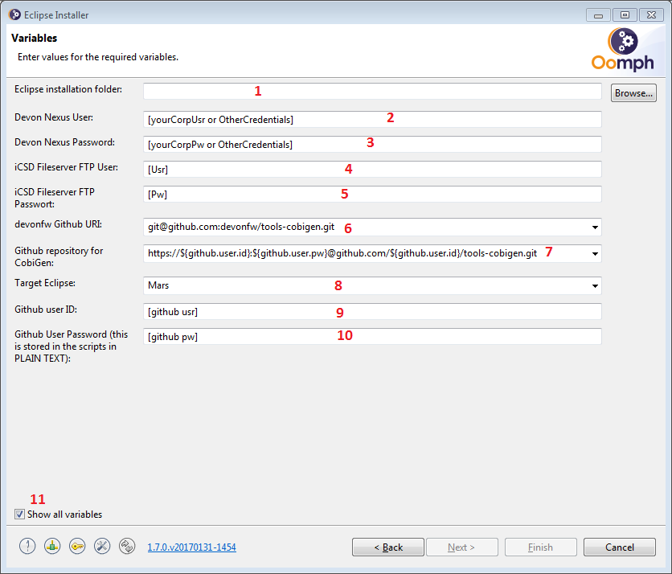
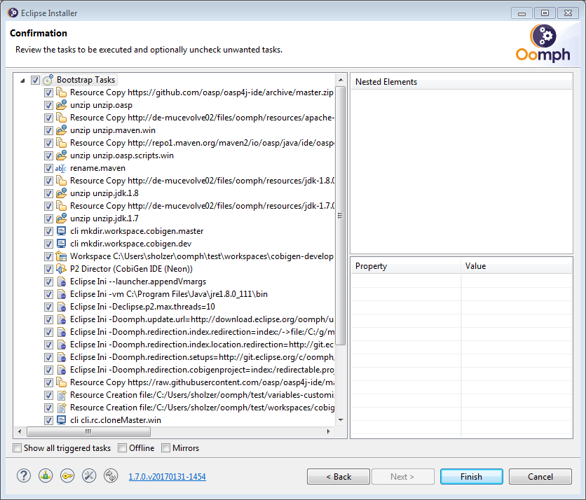
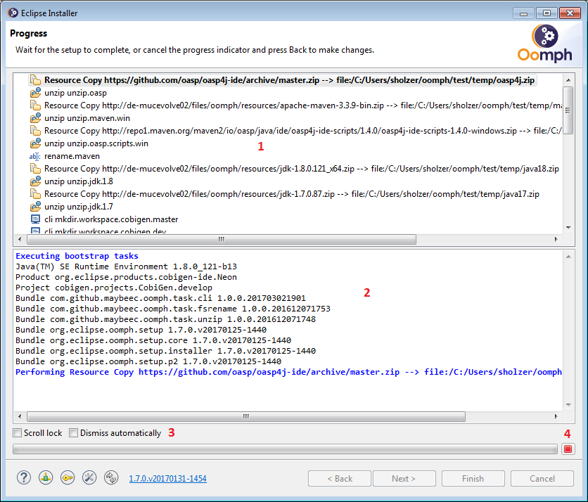
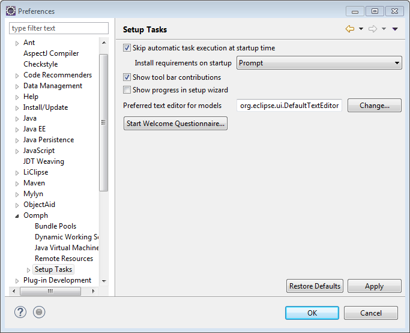
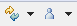

==IDE Setup with the Oomph Installer
|
This page is still under construction. |
As an alternate and faster way to set up Eclipse for CobiGen development we also provide an customized Eclipse Installer and Oomph setups.
-
The installer can be downloaded from within the corp network.
-
Unarchive it in a folder of your choice (e.g.
%home%\Eclipse Installer Capgemini\if you want to use the installer frequently) -
Run
eclipse-inst.exeoreclipse-inston linux
|
Before starting the installation make sure to
|
Quick start guide
-
On the Product page choose
CobiGen IDE -
On the Project page choose
CobiGen-
masterclones only the master branch from the specified origin -
developmentclones all development branches and the master branch from the specified origin into%installation location%/workspaces/cobigen-developmentand the master branch from the devonfw repository into%installation location%/workspaces/cobigen-master
-
Detailed Walkthrough
Clean (with Eclipse installation)
On the first installer page you need to choose what Eclipse bundle you want to use. The Product page (picture below) displays the possible choices. 
-
the current Product Catalog. Each entry represents a pre-configured Eclipse bundle. In case of doubt choose CobiGen IDE
-
the Eclipse version to be installed.
-
the bitness of the Eclipse version. Be sure to choose the bitness of your OS
-
the Java VM used during installation.
-
the bundle pool. If activated Eclipse will create a p2 pool. This can be helpful if you want to create multiple installations of eclipse. This option is hidden and deactivated by default. You can make it visible by removing the
-Doomph.p2.pool=@noneline in the installerseclipse-inst.ini -
the update indicator. If those arrows spin you can update the installer or any of it’s components by clicking on this button
-
Chooses the selected product and continues with the installation
The next installer page lets you choose a project to be checked out during installation. 
-
the current Project Catalog. Select CobiGen
-
the project stream. In case of CobiGen:
-
master: Only the master branch of Cobigen will be checked out -
development: the master branch and ALL development branches will be checked out. -
In each case you can specify an own fork as git origin
-
After choosing a project the installer fetches additional Oomph tasks. You need to accept the installation of said tasks in order to proceed.

The installer restarts then and open at the Project page again. Simply repeat the instructions for the Project page. Installation and restart is only done the first time a new task is requested by a product or project configuration.
By proceeding with the Next button the installer opens the Variables page. On this page the installation and configuration of the Eclipse bundle and the chosen projects is done by setting the variables presented.

-
the folder into that Eclipse will be installed. It is recommended to use the Browse… button to locate the folder. A direct input into the text field is possible but due to a randomly occurring bug in the installer the input is only partially parsed.
-
the User name to access the Devon Maven Nexus. Typically your corp user name. This value will be stored in
variables-customized(.bat) -
the password to access the Devon Maven Nexus. Typically your corp password. This value will be stored (PLAIN!) in
variables-customized(.bat) -
the User name to access the iCSD Fileserver. This value will be stored in
variables-customized(.bat). If no credentials were provided insert anything. -
the password to access the iCSD Fileserver. This value will be stored (PLAIN!) in
variables-customized(.bat). If no credentials were provided insert anything. -
the Github remote URI for cloning the devonfw repository of CobiGen. Target of this URI is
%installation location%/workspaces/cobigen-masterif the chosen stream isdevelopment.-
SSH: The remote URI to access the repository via ssh. Make sure to have yourgitconfigured to work with a ssh client and have this client running. -
HTTPS: The remote URI to access the repository via https. Activates theGithub user IDandGithub user Passwordvariables. User id and password are stored in the cloning scripts in plain text. -
Two-Factor-Authentification isn’t supported and probably won’t be in the future.
-
-
the Github remote URI for cloning a CobiGen repository.
-
Existing own fork (SSH): Same as above. TheGithub user IDis used in the remote URI instead ofdevonfw. Activates and requires theGithub user IDvariable. -
Existing own fork (HTTPS): Same as above. TheGithub user IDis used in the remote URI instead ofdevonfw. -
devonfw repository: Uses the remote URI from above.
-
-
The Eclipse version you want to develop cobigen for. This is not the Eclipse version to be installed. When running integration tests for the CobiGen Eclipse Plugin this Eclipse version is launched.
-
Your Github user id.
-
Your Github user password. Be aware that this is stored in plain text! Moreover, if you use special characters as for example ! or % in your password, you need to escape them in the batch file. See http://www.robvanderwoude.com/escapechars.php for further information.
-
Reveals all variables that can be set. Activated by default. If not activated preset variables and variables with default values are hidden.
The Next button can only be used if all variables are set. Proceeding the installer opens the Confirmation page. All tasks needed for installation are shown here with all variables resolved. Only the tasks needed for the installation are activated. Tasks like Project import are triggered at first startup of Eclipse.

The Finish button triggers the installation process. Once started the installation proceeds automatically.

-
indicates the task that is currently executed
-
the task output. Provides progress and debugging information
-
if activated the installer exits after successful installation
-
stops the installation
Into an existing Eclipse installation
The following instructions only hold for OASP4J-like Eclipse installations. Furthermore you need to install Oomph Setup from the Oomph Update site. When Oomph is installed activate the Oomph tool bar via the Show tool bar contributions check box.

The tool bar looks like this: 